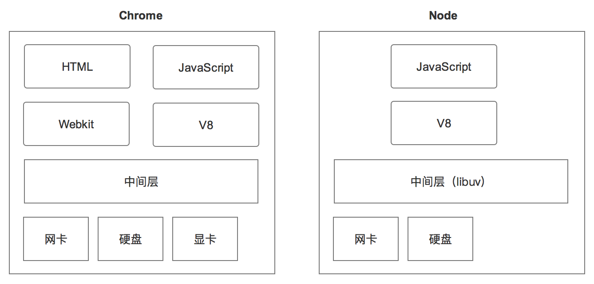
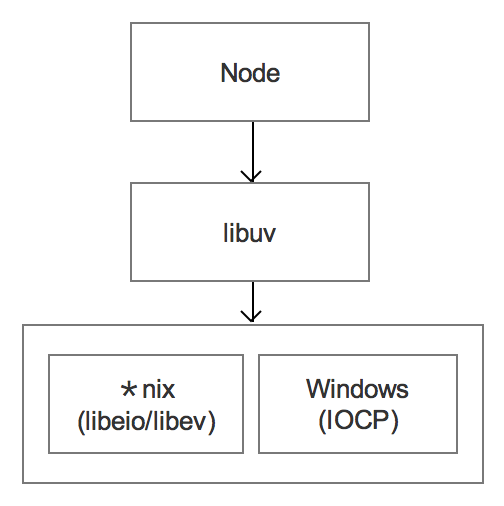
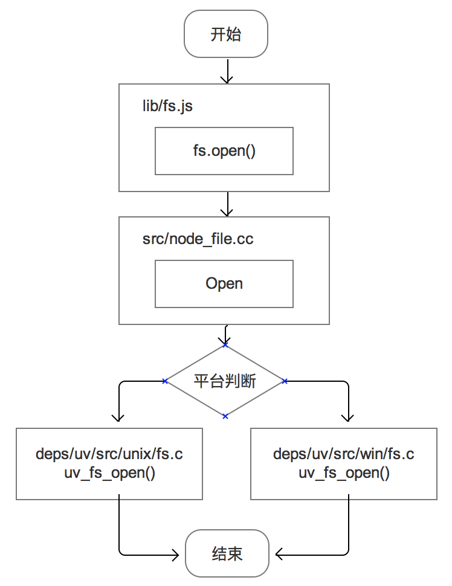

大家一起学 Node
—— 可能是迄今为止最具野心的前端技术
What is Node ？
- Node.js® is a JavaScript runtime built on Chrome's V8 JavaScript engine. Node.js uses an event-driven, non-blocking I/O model that makes it lightweight and efficient.
What can Node do ？
- 随心所欲的文件 I/O
- 搭建 WebSocket 服务端、连接 DB、玩转多进程
- 甚至，它能让 HTML + CSS + JavaScript 开发出桌面应用
- ... ...
Advantage
- lightweight and efficient
- has the largest ecosystem of open source libraries
- using JavaScript ...
基本框架
与 Chrome 前端环境的对比

基本框架
跨平台 && 异步 IO 的实现框架

基本框架
For example: fs.open

Start to use node!
- nvm + npm
- 前端构建工具: gulp, grunt; 打包工具: webpack; 其他: nodePPT
- 后端应用开发: express, koa, hexo
- 路由
- 数据库操作
- service 调用：node-soap, request
- Java 调用: node-hessian, node-java
- 桌面应用开发: node-webkit
- 单元测试: mocha + should + istanbul(后端); mocha + chai + phantomjs(前端)
前端工具
- gulp， grunt
- webpack
- nodeppt
- ... ...